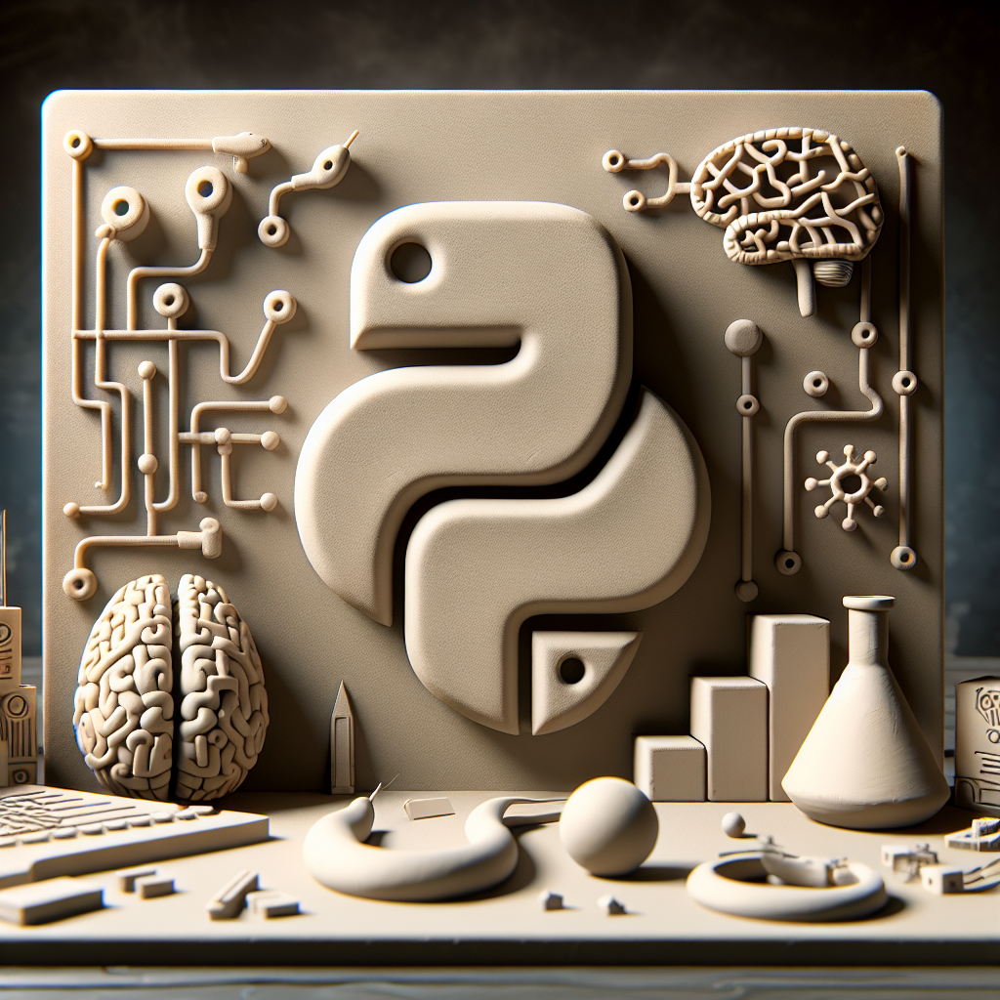

**The Future of Python and AI**
As a Python instructor, I often find myself contemplating the incredible synergy between Python and the evolving landscape of artificial intelligence. Python has long been a favorite among developers and data scientists due to its readability, simplicity, and extensive libraries. But what does the future hold for Python in the realm of AI?
**A Growing Alliance**
Python's role in AI is only expected to expand. Libraries like TensorFlow, PyTorch, and Scikit-Learn have already revolutionized how we approach machine learning and deep learning. As AI continues to integrate deeper into industries like healthcare, finance, and entertainment, Python’s adaptability makes it a prime candidate to drive these innovations.
**AI-Driven Developments in Python**
The Python community is vibrant and constantly evolving, contributing to rapid advancements in AI technologies. New libraries and tools are regularly developed, making it easier to build and deploy sophisticated AI models. As AI systems become more complex, the demand for efficient, scalable solutions will ensure that Python remains at the forefront.
**Education and Accessibility**
One of Python's greatest strengths is its role in democratizing AI education. Its accessibility allows a broader range of people to enter the field, fostering diverse ideas and solutions. Online courses and educational resources continue to flourish, inspiring a new generation of AI developers and enthusiasts.
**Challenges and Opportunities**
While the future is promising, it's not without challenges. Keeping up with AI’s rapid advancements requires ongoing adaptation and learning. Python must continue to optimize performance and support for emerging AI technologies. However, with its robust community and emphasis on open-source collaboration, Python is well-equipped to meet these challenges.
**Conclusion**
The future of Python in AI is bright and full of potential. As both fields evolve, we will witness groundbreaking innovations that redefine industries and improve lives. Whether you're a seasoned developer or a beginner, the intersection of Python and AI offers endless possibilities and exciting opportunities.
As we look ahead, one thing is clear: Python will continue to play a pivotal role in shaping the future of technology and AI.